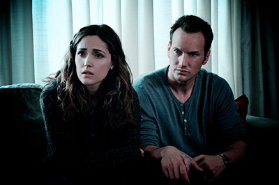

Побег из Шоушенка
Успешный банкир Энди Дюфрейн обвинен в убийстве собственной жены и ее любовника. Оказавшись в тюрьме под названием Шоушенк, он сталкивается с жестокостью и беззаконием, царящими по обе стороны решетки. Каждый, кто попадает в эти стены, становится их рабом до конца жизни. Но Энди, вооруженный живым умом и доброй душой, отказывается мириться с приговором судьбы и начинает разрабатывать невероятно дерзкий план своего освобождения.
Наркоз
Клай Бересфорд вынужден лечь под нож. Однако в процессе операции на сердце он неожиданно приходит в себя. Находясь в парализованном состоянии, будучи не в силах пошевелить ни рукой, ни ногой, он, тем не менее, чувствует каждое касание скальпеля к своей плоти…

Астрал
Джош и Рене переезжают со своими детьми в новый дом, но не успевают толком распаковать вещи, как начинаются странные события. Необъяснимо перемещаются предметы, в детской звучат странные звуки… Но в настоящий ужас приходят родители, когда их десятилетний сын Далтон впадает в кому. Все усилия врачей в больнице помочь мальчику безуспешны.
Гравитация
Доктор Райан Стоун, блестящий специалист в области медицинского инжиниринга, отправляется в свою первую космическую миссию под командованием ветерана астронавтики Мэтта Ковальски, для которого этот полет — последний перед отставкой. Но во время, казалось бы, рутинной работы за бортом случается катастрофа.
Шаттл уничтожен, а Стоун и Ковальски остаются совершенно одни; они находятся в связке друг с другом, и все, что они могут, — это двигаться по орбите в абсолютно черном пространстве без всякой связи с Землей и какой-либо надежды на спасение.
Аватар
Джейк Салли - бывший морской пехотинец, прикованный к инвалидному креслу. Несмотря на немощное тело, Джейк в душе по-прежнему остается воином. Он получает задание совершить путешествие в несколько световых лет к базе землян на планете Пандора, где корпорации добывают редкий минерал, имеющий огромное значение для выхода Земли из энергетического кризиса.
Гарри Поттер и Орден Феникса
Гарри проводит свой пятый год в школе Хогвартс и обнаруживает, что многие из членов волшебного сообщества отрицают факт недавнего состязания юного волшебника с воплощением вселенского зла Волдемортом. Все делают вид, что не имеют ни малейшего представления о том, что злодей вернулся. Однако впереди волшебников ждет необычная схватка.
Троя
1193 год до нашей эры. Парис украл прекрасную Елену, жену царя Спарты Менелая. За честь Менелая вступается его брат – царь Агамемнон. Его армия под предводительством Ахиллеса подошла к Трое и взяла город в кровавую осаду, длившуюся долгих десять лет… Два мира будут воевать за честь и власть. Тысячи умрут за славу. И за любовь нация сгорит дотла.
Крупная рыба
В основу этой приключенческой ленты положен роман Дэниела Уоллеса «Большая рыба: роман мифических пропорций». Умирает отец, о жизни которого сын хочет узнать как можно больше, собирая истории о нем. Сын пытается воссоздать ускользающую жизнь отца в серии легенд и мифов, которые тот придумывает на основе разрозненных фактов. Взлеты и падения в жизни человека в итоге предстают в неожиданном ракурсе